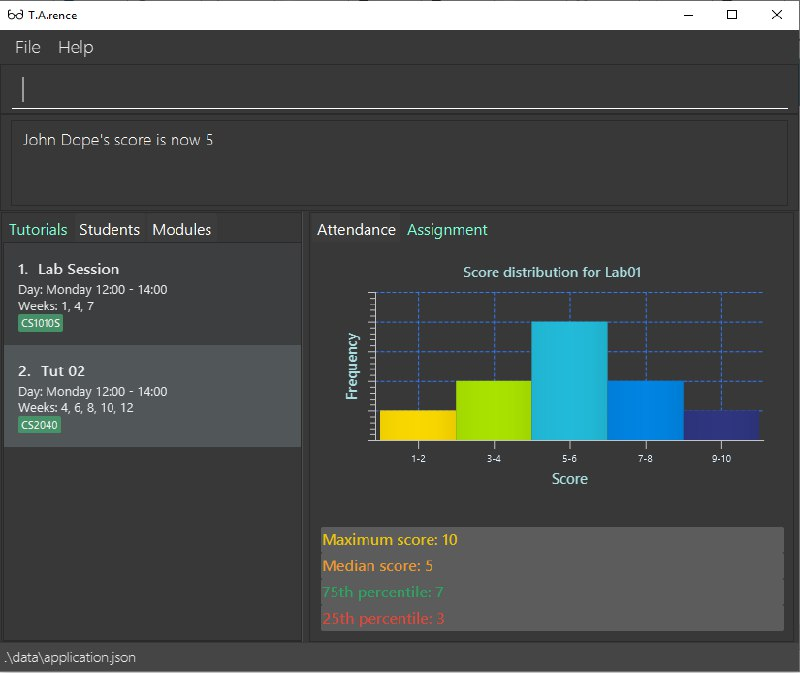

By: AY1920S1-CS2103-T14-2 Since: Aug 2019 Licence: MIT
- 1. Introduction
- 2. Quick Start
- 3. Features
- 3.1. Viewing Help :
help - 3.2. Adding a Module:
addModule - 3.3. Adding a Tutorial Slot :
addTutorial - 3.4. Adding a Student :
addStudent - 3.5. Deleting a Module :
deleteModule - 3.6. Deleting a Tutorial :
deleteTutorial - 3.7. Deleting a Student :
deleteStudent - 3.8. Editing a Student :
edit - 3.9. Undo Previously-entered Commands :
undo - 3.10. Clearing all entries :
clear - 3.11. Searching Student by Name:
find - 3.12. Display Tutorial Class' Test Results :
displayAssignmentScore - 3.13. Display tutorial class assignments :
displayAssignments - 3.14. Display Tutorial Class' Attendance :
displayAttendance - 3.15. Listing Students from a Tutorial :
list - 3.16. Changing the UI tab :
cd - 3.17. Marks attendance of a tutorial
markAttendance - 3.18. Exports attendance of a tutorial to csv
exportAttendance - 3.19. Adding an Assignment :
addAssignment - 3.20. Deleting an Assignment :
deleteAssignment - 3.21. Set an Assignment score for a Student :
setAssignmentScore - 3.22. Adding an Event :
addEvent - 3.23. Deleting an Event :
deleteEvent - 3.24. Editing an Event :
editEvent - 3.25. List Events in a Tutorial :
listEvents - 3.26. Set start of semester :
setSemStart - 3.27. Mark Participation for a Student :
classPart[coming in v2.0] - 3.28. Store a Student’s Results :
addMarks[coming in v2.0] - 3.29. Add Personal Notes to a Student :
note[coming in v2.0] - 3.30. Exiting the program :
exit - 3.31. Saving the data
- 3.1. Viewing Help :
- 4. Enhancements
- 5. FAQ
- 6. Command Summary
1. Introduction
T.A.rence is a desktop app for university Teaching Assistants (TAs) to manage their classes and students. T.A.rence is optimized for users who prefer to work with a Command Line Interface (CLI) while still having the benefits of a Graphical User Interface (GUI). If you can type fast, T.A.rence can get your teaching management tasks done faster than traditional GUI apps.
2. Quick Start
-
Ensure you have Java
11or above installed in your Computer. -
Download the latest
.jarhere. -
Copy the file to the folder you want to use as the home folder for T.A.rence.
-
Double-click the file to start the app. The GUI should appear in a few seconds.
 -
Type the command in the command box and press Enter to execute it.
e.g. typinghelpand pressing Enter will open the help window. -
Some example commands you can try:
-
list: lists all students from a given tutorial. -
addStudent` n/John Do e/johnd@example.com m/CS2100 tn/Tutorial-01` : adds a student namedJohn Doeinto theTutorial-01class inside moduleCS2100. -
deleteStudent3: deletes the student in index 3 -
exit: exits the app
-
-
Refer to Section 3, “Features” for details of each command.
3. Features
Command Format
-
Words in
UPPER_CASEare the parameters to be supplied by the user; e.g. inaddStudent n/NAME,NAMEis a parameter which can be used asadd n/John Doe. -
Parameters can be in any order e.g. if the command specifies
n/NAME e/EMAIL,e/EMAIL n/NAMEis also acceptable. -
Inputs for parameters (apart from student names) are case-insensitive; e.g.
addModule m/Cs1010ssaves the module as "CS1010S" andm/cs1010swill subsequently refer to the same module. -
Command names are also case-insensitive; e.g.
addTutorialandaddtutorialare equivalent. -
Longer commands can be truncated; e.g.
delstucan be entered instead ofdeleteStudent.
3.1. Viewing Help : help
Format: help
3.2. Adding a Module: addModule
Adds a module to T.A.rence.
Format: addModule m/MODULE_CODE.
Examples:
-
addModule m/CS1010 -
addModule m/ST2132
|
Command synonyms: |
3.3. Adding a Tutorial Slot : addTutorial
Adds a tutorial slot into the specified module.
Pre-condition: Module must already exist inside application.
Explanation: Adds a tutorial called Tutorial-01 which starts at 1PM, lasts for 60 minutes,
and occurs every Monday during weeks 1,2, and 3 into module CS1010.
Format: addTutorial tn/[TUTORIAL_NAME] st/[START_TIME] dur/[TUTORIAL_DURATION] d/[TUTORIAL_DAY] w/[TUTORIAL_WEEKS] m/[MODULE_CODE]
Example:
-
addTutorial tn/Tutorial-01 st/1300 dur/60 d/Mon w/1,2,3 m/CS1010S
|
START_TIME is in the format hhmm. |
|
Other input options for
Omit Command synonyms: |
3.4. Adding a Student : addStudent
Adds a student into a specified tutorial.
|
Pre-condition: Module and tutorial slot must already exist inside the application. |
Format: addStudent n/[NAME] e/[EMAIL] tn/[TUTORIAL_NAME] m/[MODULE_CODE].
Example:
-
addStudent n/Bob e/bob@gmail.com m/CS1010S tn/Tutorial-01
Explanation: Adds a student named Bob into Tutorial-01 under module CS1010.
3.5. Deleting a Module : deleteModule
Deletes an existing module from T.A.rence, based on it’s module list index.
Format: deleteModule INDEX.
Examples:
-
deleteModule 1
|
Alternatively, you can use the module code to specify the module to be deleted.
The format will be:
Command synonyms: |
3.6. Deleting a Tutorial : deleteTutorial
Deletes an existing tutorial from T.A.rence, based on it’s tutorial list index.
Format: deleteTutorial INDEX
Examples:
-
deleteTutorial 1
|
Alternatively, You can use the module code and tutorial name to specify the tutorial to be deleted.
If there are multiple tutorials with the same name, you will need to specify the module code.
Command synonyms: |
3.7. Deleting a Student : deleteStudent
Deletes an existing student from T.A.rence, based on their student list index.
Format: deleteStudent INDEX
Examples:
-
list 2
deleteStudent 2
Deletes the 2nd student in the 2nd tutorial. -
find Betsy
deleteStudent 1
Deletes the 1st person in the results of thefindcommand.
|
Command synonyms: |
3.8. Editing a Student : edit
Allows user to edit an existing student information. Everything except the module and tutorial of the student can be edited.
Format: edit [INDEX OF STUDENT] n/[EDITED_STUDENT_NAME]
Example:
-
edit 1 n/Ben Leong
3.9. Undo Previously-entered Commands : undo
Undos a specified number of actions.
Format:
undo u/[NUMBER_OF_ACTIONS]
Undoes any state-altering command from the application.
Format: undo u/NUMBER_OF_STATES_TO_UNDO
Example:
undo u/2
3.10. Clearing all entries : clear
Clears all entries from the T.A.rence.
Format: clear
Example:
clear
3.11. Searching Student by Name: find
Searches and displays student particulars based on name. The search can be based on partial strings that match
and need not be the full name of the student.
Format: find [SEARCH_TERM]
Examples:
-
find John
ReturnsjohnandJohn Doe -
find Betsy Tim John
Returns any person having namesBetsy,Tim, orJohn
3.12. Display Tutorial Class' Test Results : displayAssignmentScore
Allows user to display overall results for an exam or assignment. This can be in the form of a graph or table,

Format: displayAssignmentScore i/TUTORIAL_INDEX n/ASSIGNMENT_NAME f/DISPLAY_FORMAT`.
Example:
-
displayAssignmentScorei/1 n/Lab01 f/graph -
displayAssignmentScorei/1 n/Lab01 f/table
|
Command synonyms: |
3.13. Display tutorial class assignments : displayAssignments
Allows user to list out existing assignments in a tutorial.
Format: displayAssignments `TUTORIAL_INDEX.
Example:
-
displayAssignments1
|
Command synonyms: |
3.14. Display Tutorial Class' Attendance : displayAttendance
Allows user to display overall attendance for a class.

Full Format: displayAttendance m/MOD_CODE tn/TUTORIAL_NAME
Shortcut Format: displayAttendance i/TUTORIAL_INDEX
Example:
-
displayAttendancem/CS1010 tn/Lab Session -
displayAttendancei/1
|
Command Synonyms: |
3.15. Listing Students from a Tutorial : list
Lists all students from a particular tutorial slot. If no index is given, all students will be listed.
Format: list TUTORIAL_INDEX
Example:
-
list 1 -
list
|
Command synonyms: |
3.16. Changing the UI tab : cd
Toggles the tab switching between tutorial(t), module(m) and student(s) list.
Format: cd TAB_TO_SWITCH
Command synonyms: changetab
Example:
-
cd t -
cd m -
cd s=== Import tutorials via NUSMods url:import
Imports tutorials via NUSMods url. Does not require an internet connection.
Format: import [URL]
Example:
|
Command synonyms: |
3.17. Marks attendance of a tutorial markAttendance
Marks/Toggles attendance of a tutorial or a student.
Format:
-
markAttendancei/[TUTORIAL_INDEX] w/[WEEK] -
markAttendancetn/[TUTORIAL_NAME] m/[MODULE_NAME] w/[WEEK] n/[STUDENT NAME] -
WEEK is a positive integer between 1 to 13
Example:
-
markAttendance i/1 w/5
-
markAttendance n/John Doe tn/Lab 1 m/CS1010 w/5
|
You can use either tutorial index or tutorial name with module code to specify the tutorial. Example of marking attendance of student: Inputting "markAttendance n/Mark tn/Lab Session m/CS1010S w/7" will toggle the attendance of Mark in tutorial of name "Lab Session" and the attendance table of the tutorial will be displayed accordingly. image::MarkAttendance1.png[width="400"] image::MarkAttendance2.png[width="400"] Example of marking attendance of tutorial: When "markAttendance tn/Lab Session m/CS1010S w/7" is inputted, the application will prompt the user to mark/toggle the attendance of the first student in the tutorial. image::MarkAttendance3.png[width="400"] The user may input "y" or "n", after which the command will be executed/cancelled respectively and the application will prompt the user to mark the attendance of the next student. image::MarkAttendance4.png[width="400"] Command Synonyms: |
3.18. Exports attendance of a tutorial to csv exportAttendance
Exports attendance of a tutorial.
Format:
-
exportAttendancei/[TUTORIAL_INDEX] f/[FILENAME](Optional) -
TUTORIAL_INDEX is a non-negative integer (>= 0)
Example:
-
exportAttendance tn/Lab 1 m/CS1010 f/exportedAttendance
|
You can use either tutorial index or tutorial name with module code to specify the tutorial.
|
3.19. Adding an Assignment : addAssignment
Adds an assignment to a Tutorial.
Format:
-
addAssignmenti/[TUTORIAL_INDEX] n/[ASSIGNMENT_NAME] score/[MAX_SCORE] sd/START_DATE ed/END_DATE
Command Synonyms: adda, addasm, addassn, addassignment
Example:
-
addAssignment i/TUTORIAL INDEX n/ASSIGNMENT NAME score/MAX SCORE sd/START DATE ed/END DATE
|
|
You can use either tutorial index or tutorial name with module code to specify the tutorial.
Command Synonyms: |
3.20. Deleting an Assignment : deleteAssignment
Deletes an Assignment from a Tutorial.
Format:
-
deleteAssignmenti/[TUTORIAL_INDEX] n/[ASSIGNMENT_NAME] score/[MAX_SCORE] sd/START_DATE ed/END_DATE
Example:
-
deleteAssignment tn/Lab 1 m/CS1010 n/Lab01 score/10 sd/09-11-2001 0000 ed/31-10-2019 2359
|
|
You can use either tutorial index or tutorial name with module code to specify the tutorial.
Command Synonyms: |
3.21. Set an Assignment score for a Student : setAssignmentScore
Sets an Assignment score for a Student.
Format:
-
setAssignmentScorei/[TUTORIAL_INDEX] i/[ASSIGNMENT_INDEX] i/[STUDENT_INDEX] score/[score]
Example:
-
setAssignmentScore i/1 i/1 i/1 score/10
|
You can use either tutorial index or tutorial name with module code to specify the tutorial.
|
3.22. Adding an Event : addEvent
Adds an Event to a Tutorial.
Format:
-
addEventi/[TUTORIAL_INDEX] n/[EVENT_NAME] sd/[START_DATE] ed/[END_DATE]
Example:
-
addEvent i/1 n/Lab01 sd/09-11-2001 0000 ed/31-10-2019 2359
|
|
You can specify the full tutorial name and module code instead of the index
Command synonyms: |
3.23. Deleting an Event : deleteEvent
Adds an Event to a Tutorial.
Format:
-
addEventi/[TUTORIAL_INDEX] n/[EVENT_NAME] sd/[START_DATE] ed/[END_DATE]
Example:
-
deleteEvent i/1 n/Lab01 sd/09-11-2001 0000 ed/31-10-2019 2359
|
|
You can use also use tutorial name with module code to specify the Tutorial.
You can also use i/[EVENT INDEX] to specify the Event, instead of inputting Event details.
Command synonyms: |
3.24. Editing an Event : editEvent
Edits an Event in a Tutorial.
Format:
-
editEventi/[EVENT_INDEX] i/[TUTORIAL_INDEX] n/[EVENT_NAME] sd/[START_DATE] ed/[END_DATE]
Example:
-
editEvent i/1 i/1 n/Lab01 sd/09-11-2001 0000 ed/31-10-2019 2359
|
|
You can also use the tutorial name with module code to specify the Tutorial.
Event detail fields (EVENT_NAME, START_DATE, END_DATE) are optional. Command synonyms: |
3.25. List Events in a Tutorial : listEvents
Lists Events in a Tutorial.
Format:
-
listEventsi/[TUTORIAL_INDEX] -
TUTORIAL_INDEX is a non-negative integer (>= 0)
Example:
-
listEvents i/1
|
You can use either tutorial index or tutorial name with module code to specify the Tutorial.
Command synonyms: |
3.26. Set start of semester : setSemStart
Sets the start date of the semester. Determines dates of tutorial Events.
Format:
* setSemStart sd/[START_DATE]
* START_DATE follows the format of dd-mm-yy e.g 31-10-2019
Example:
-
setSemStart sd/31-12-2001
|
Command synonyms: |
3.27. Mark Participation for a Student : classPart [coming in v2.0]
Gives participation marks to a student of a particular tutorial slot
Format: `classPart c/[TUTORIAL_NAME] n/[STUDENT_NAME]
3.28. Store a Student’s Results : addMarks [coming in v2.0]
Allows user to add test results of a student of a particular tutorial slot
Format: `addMarks c/[TUTORIAL_NAME] n/[STUDENT_NAME] marks/[MARK_OBTAINED]
3.29. Add Personal Notes to a Student : note [coming in v2.0]
Allows user to add personal notes about class or feedback received by students.
Format: `note t/[NOTES]
3.30. Exiting the program : exit
Exits the program.
Format: exit
3.31. Saving the data
All data in T.A.rence is saved in the hard disk automatically after any command that changes the data.
There is no need to save manually.
Data is saved to "application.json".
Temporary state files are created in "/data/states/". On closure of the application, the "/data/states/" folder will be automatically deleted.
4. Enhancements
T.A.rence contains a few input correction features to enhance usability.
4.1. Autocorrect
If invalid parameters are detected in the command input, T.A.rence tries to suggest similar alternatives that can be selected and run without having to retype the entire command.
E.g. given input
addTutorial tn/Tut01 m/GET1000 …
T.A.rence might respond:
No such module found. Did you mean: 1. GER1000
Entering the number 1 runs the command addTutorial tn/Tut01 m/GER1000 ….
4.2. Autocomplete
T.A.rence generates and displays real-time suggestions for command words and user data from the application (e.g. module codes and tutorial names), depending on the field the user is currently entering. Similar to other CLI programs such as Windows' Command Prompt and MacOS' Terminal, pressing the "TAB" key will autofill the input box with the current suggestion. Pressing "CTRL" cycles through the different available suggestions.
E.g.: with addTutorial m/GE in the input box, pressing "CTRL" changes the displayed suggestion to R1000, Q1000, etc., depending on which modules beginning with "GE" were previously added to the application. Pressing "TAB" then changes the input box value to addTutorial m/GE_1000.
4.3. Command History
Every command entered into T.A.rence is saved. Press the "UP" key to bring up older commands and the "DOWN" key to move back to more recent ones.
5. FAQ
Q: How do I transfer my data to another Computer?
A: Install the app in the other computer and overwrite the empty data file it creates with the file that contains the data of your previous T.A.rence folder.
6. Command Summary
-
Add Module
addModule m/MODULE_CODE
e.g.add m/CS1010 -
Add Tutorial
addTutorial tn/TUTORIAL_NAME st/START_TIME dur/TUTORIAL_DURATION d/TUTORIAL_DAY w/TUTORIAL_WEEKS m/MODULE_CODEe.g.
addStudent n/Bob e/bob@gmail.com mat/A1234567Z1 nusid/E1234567 m/CS1010S tn/Tutorial-01 -
Add Student
addStudent n/NAME e/EMAIL mat/MATRICULATION_NUMBER nusid/NUSNET_ID tn/TUTORIAL_NAME m/MODULE_CODEe.g.
addStudent n/Bob e/bob@gmail.com mat/A1234567Z1 nusid/E1234567 m/CS1010S tn/Tutorial-01 -
Help :
help -
Exit :
exit